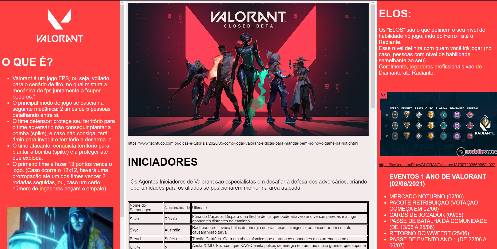
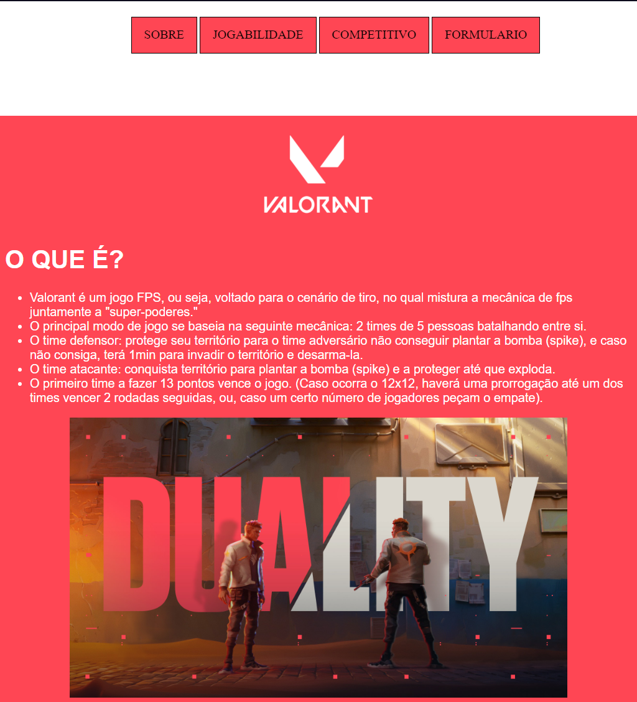

SOBRE OS CRIADORES
João Pedro Martins Cruz
De 2004, estudante de informática do CEFET-MG. Apaixonado por jogos de mundo aberto e FPS, música, filmes de ficção científica e fantasia.
Desde pequeno muito interessado e apaixonado por peças de computador. Ao começar a aprender programação e o mundo da informática no CEFET, percebeu que estava no lugar certo.
A escolha do tema foi baseada com os nossos interesses pessoais. Ambos gostamos do jogo e da estética que ele traria para a elaboração do site.
Isabelly Araújo Temoteo
De 2004, também estudante de informática no CEFET-MG. Desde sempre com gosto e maior afeição por jogos de qualquer estilo e animes, também apaixonada por música, livros e cosplays.
Desde pequena sempre houve um grande contato com a tecnologia e com o tempo surgiu a vontade de aprimorar esses conhecimentos. Por conta disso, hoje se encontra no CEFET.
Valorant foi um jogo em que ocorreu amor a primeira vista, por conta disso, acabou até mesmo criando uma maior interação com o outro criador do site, uma amizade dentro e fora do jogo. Com isso, o tema não precisou ser nem discutido, a primeira opção foi Valorant.
VERSÕES DO SITE
VERSÃO 1.0
Versão inicial do site.

VERSÃO 2.1
Nessa versão foram reconfigurados alguns elementos do site.
VERSÃO 2.2
Nessa versão foram adicionados o formulário e o site foi completamente reformulado.

VERSÃO 3.0
Reformulações na estética do site.
Conexão do Formulário com o Banco de Dados
Criação da página de apresentação dos dados cadastrados no Banco